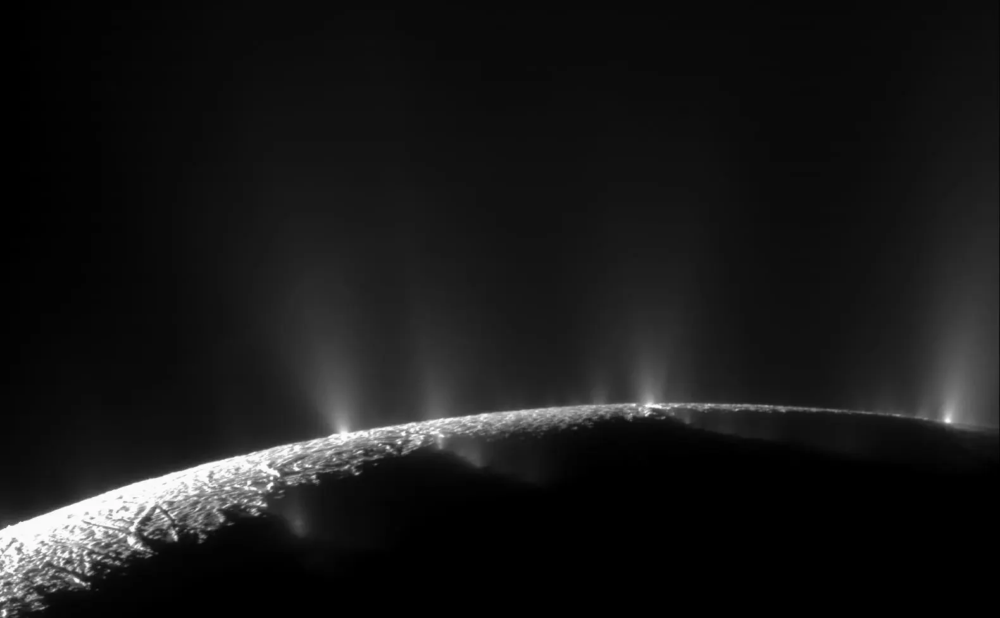
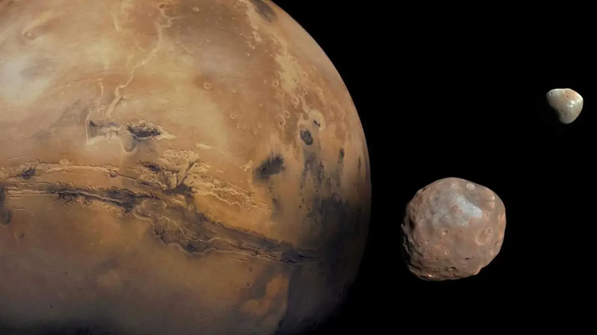
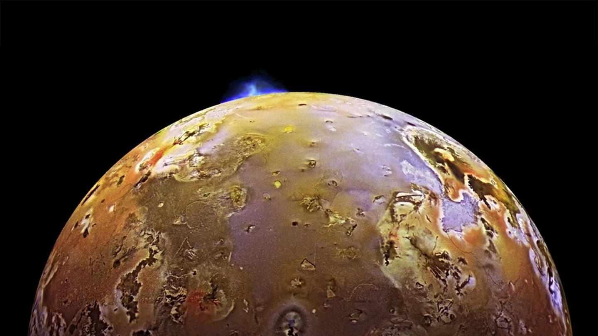
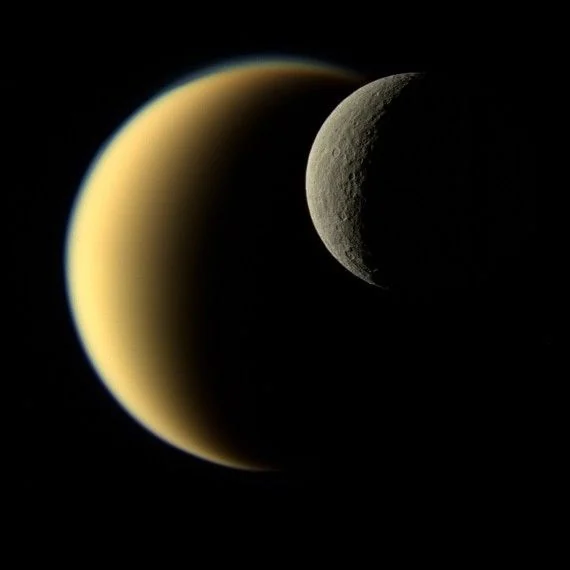

Twenty-two moons
Two of them larger than Mercury. One with weather. One running backwards. Two that are barely more than gravel.
Orbits and radii from the orrery's satellite table; the Moon from the body table.
- Earth
- 1
- Mars
- 2
- Jupiter
- 4
- Saturn
- 7
- Uranus
- 5
- Neptune
- 3
Enceladus venting water ice into space, backlit by the Sun. NASA / JPL-Caltech / Space Science Institute.
The roster
Radius in kilometres, orbital period in days. The spread runs from Deimos, six kilometres across, to Ganymede, which would be counted a planet if it went round the Sun instead.
| Moon | Primary | Radius | Period |
|---|---|---|---|
| The Moon | Earth | 1,737.4 | 27.322 |
| Phobos | Mars | 11.1 | 0.319 |
| Deimos | Mars | 6.2 | 1.262 |
| Io | Jupiter | 1,821.5 | 1.769 |
| Europa | Jupiter | 1,560.8 | 3.551 |
| Ganymede | Jupiter | 2,631.2 | 7.155 |
| Callisto | Jupiter | 2,410.3 | 16.689 |
| Mimas | Saturn | 198.2 | 0.942 |
| Enceladus | Saturn | 252.1 | 1.370 |
| Tethys | Saturn | 531.1 | 1.888 |
| Dione | Saturn | 561.4 | 2.737 |
| Moon | Primary | Radius | Period |
|---|---|---|---|
| Rhea | Saturn | 763.5 | 4.518 |
| Titan | Saturn | 2,574.8 | 15.945 |
| Iapetus | Saturn | 734.3 | 79.333 |
| Miranda | Uranus | 235.8 | 1.413 |
| Ariel | Uranus | 578.9 | 2.520 |
| Umbriel | Uranus | 584.7 | 4.144 |
| Titania | Uranus | 788.9 | 8.706 |
| Oberon | Uranus | 761.4 | 13.463 |
| Triton | Neptune | 1,352.6 | 5.877 |
| Proteus | Neptune | 208.0 | 1.122 |
| Nereid | Neptune | 170.0 | 360.068 |
The seven largest, and Mercury
Two moons are wider than the innermost planet. Neither is remotely as heavy: Mercury is rock and iron, while Ganymede and Titan are roughly half water ice.
All eight are to scale with each other, and all eight are photographs. Mercury is ringed with a dashed line: it is a planet, included only for comparison.
Two rocks on short leashes
Phobos is eleven kilometres across and orbits in under eight hours. That is faster than Mars turns, so from the surface it rises in the west and sets in the east twice a day.
It is also falling. Tidal drag is pulling it inward, and it will break up or strike the planet within about fifty million years.
- Phobos, orbit
- 9,379 km0.319 d
- Phobos, density
- 1.872 g/cm³
- Deimos, orbit
- 23,459 km1.262 d
- Deimos, density
- 1.471 g/cm³
Both photographs, to scale with each other. At the scale of the previous slide, either would be smaller than this full stop. Phobos: NASA / JPL-Caltech / University of Arizona. Deimos: NASA / JPL-Caltech / MSSS.

Two lumps
Neither is round: both are too small for gravity to pull them into a sphere. Phobos orbits closer to its planet than any other moon in the solar system, and faster than Mars turns, so from the surface it rises in the west.
It is also spiralling inwards. In tens of millions of years it will break apart into a ring.
Mars with both moons at their relative sizes. Deimos, upper right, is 12.4 km across. NASA / JPL-Caltech / Malin Space Science Systems.
The Galileans
Density falls steadily outward: 3.53 g/cm³ at Io, 1.83 at Callisto. The inner two are rock; the outer two are about half water ice. Distance from Jupiter set how much ice survived.
- Io
- 1,822 km · 1.77 d · 3.53 g/cm³The most volcanically active world in the solar system: sulfur frosts, 400+ volcanoes.
- Europa
- 1,561 km · 3.55 d · 3.01 g/cm³A cracked ice shell over a global salt-water ocean holding twice Earth’s water.
- Ganymede
- 2,631 km · 7.15 d · 1.94 g/cm³Largest moon in the solar system, bigger than Mercury, and the only one with its own magnetic field.
- Callisto
- 2,410 km · 16.69 d · 1.83 g/cm³The most heavily cratered object known; geologically dead for ~4 billion years.
Io, Europa, Ganymede and Callisto at their true relative sizes, beside the Great Red Spot. NASA / JPL / DLR.

Io
The most volcanically active world in the solar system: sulfur frosts, 400+ volcanoes. Squeezed by Jupiter and pulled on by Europa and Ganymede, its interior is kneaded hard enough to stay molten.
The material it throws off feeds the plasma torus that powers Jupiter's radiation belts, the same belts steadily wrecking the camera that took the smaller picture.
- Radius
- 1,821.5 km
- Orbit
- 422,019 km1.769 d
- Density
- 3.528 g/cm³the densest moon
- Eccentricity
- 0.0036small, and enough
A plume standing 140 km above the limb, seen by Galileo. NASA / JPL / University of Arizona.

Europa
The smoothest body in the solar system: an ice shell over a global salt-water ocean holding roughly twice the water of every ocean on Earth. Almost no craters, because the surface keeps renewing itself.
The rust-coloured streaks are salts and sulfur compounds carried up through the cracks. They are the ocean, sampled at the surface.
- Radius
- 1,560.8 km
- Orbit
- 671,100 km3.551 d
- Density
- 3.013 g/cm³
Galileo imagery, reprocessed in 2014 to approximate natural colour. NASA / JPL-Caltech / SETI Institute.
Ganymede and Callisto
Saturn's ice moons
Six small worlds made mostly of water ice. Tethys, at 0.98 g/cm³, is barely denser than the stuff it is made of. Titan is left out of this row: at the same scale it would be three and a third times Rhea's width.

Titan
The only moon with a thick atmosphere, and the only other world with standing liquid: methane lakes. Wider than Mercury, and the second largest moon in the solar system.
Titan behind Rhea. The haze has no visible surface features at all in ordinary light. NASA / JPL-Caltech / Space Science Institute.
Under the haze
Cassini carried an infrared spectrometer that sees straight through the haze. Assembled from thirteen years of flybys, these six views show what the orange ball conceals: bright equatorial dune fields, darker highlands, and the methane lakes near the pole.
Enceladus
Brightest surface in the solar system, venting water ice from a subsurface ocean. Two hundred and fifty kilometres across, small enough to sit inside the length of Britain, and geologically alive.
The fractured ice crust. NASA / JPL-Caltech / Space Science Institute.
Mimas
Herschel crater spans a third of its diameter. Whatever struck Mimas came close to destroying it, and the fractures on the far side may be from the same impact.
At 198 kilometres it is the smallest of Saturn’s round moons, and only just round: its own gravity barely wins.
- Radius
- 198.2 km
- Orbit
- 186,007 km0.942 d
- Density
- 1.150 g/cm³nearly all ice
Herschel crater at the terminator. NASA / JPL-Caltech / Space Science Institute.
Iapetus
One hemisphere is as dark as coal, the other as bright as snow. The dark side always leads, sweeping up material as it goes; ice sublimates away from the warmed surface and refreezes on the cold bright side.
A ridge twenty kilometres high runs most of the way around the equator. Nobody knows why it is there.
- Radius
- 734.5 km
- Orbit
- 3,560,820 km79.33 d
The bright trailing hemisphere. NASA / JPL-Caltech / Space Science Institute.
Uranus’s five
All five orbit in their planet’s equatorial plane. Tipped 98°, that means their inclinations read 97.7° to 99.2° and their orbits run over the poles as seen from the ecliptic.
Neptune’s three
Two of these were almost certainly not born here. Triton orbits backwards at 129° inclination, and Nereid swings between 1.4 and 9.7 million kilometres on a 360-day loop.
Where the numbers come from
Radii, orbits, periods and densities are read straight from the orrery’s satellite table. Every disc is sized to true relative scale, so the size comparisons hold even where a moon is still a drawn circle.
- Satellite data
- The orrery’s own satellite table: radius, semi-major axis, period, eccentricity, inclination and density for 21 moons
- The Moon
- The body constants table: NASA Planetary Fact Sheets and IAU WGCCRE 2015
- Descriptions
- The satellite table’s own note fields, quoted unchanged
- Photographs
- Cassini (Titan, Enceladus, Mimas, Tethys, Dione, Rhea, Iapetus): NASA / JPL-Caltech / Space Science Institute. Voyager 2 (Miranda, Ariel, Umbriel, Titania, Oberon, Triton, Proteus, Nereid): NASA / JPL / USGS. Juno (Io at the limb, Ganymede): NASA / JPL-Caltech / SwRI / MSSS, Io via a citizen scientist. Galileo (Galilean group portrait, Callisto): NASA / JPL / DLR; Io’s plume and Phobos: NASA / JPL / University of Arizona; Europa: NASA / JPL-Caltech / SETI Institute. Titan’s surface: ESA / NASA / JPL / University of Arizona; Titan in infrared: NASA / JPL-Caltech / University of Nantes. Mars and Deimos: NASA / JPL-Caltech / MSSS. Mercury: NASA / Johns Hopkins APL / Carnegie Institution. The Moon: NASA.
- Still needed
- All twenty-two are photographs. Nereid is the weakest: Voyager 2 passed too far off to resolve more than a smudge, so it is shown enlarged from a few dozen pixels.